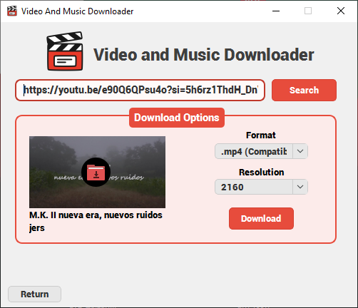
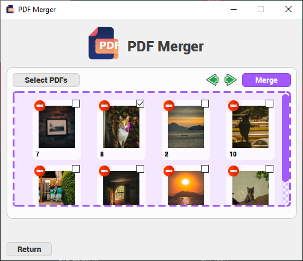
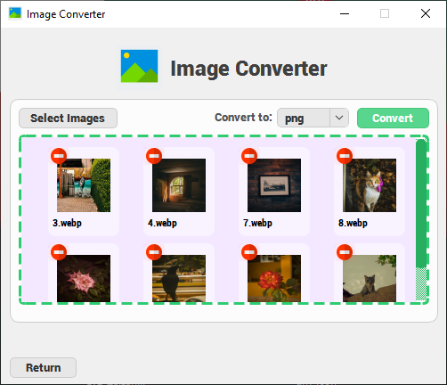
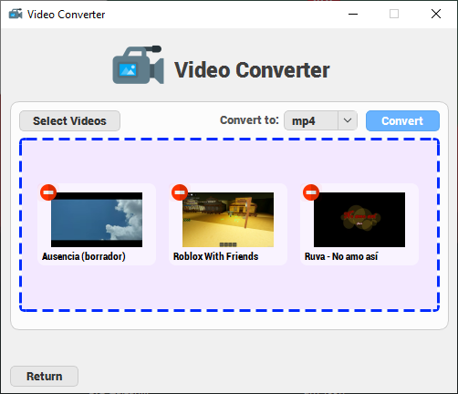
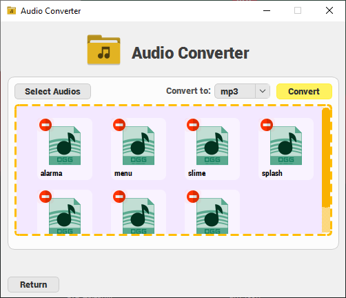
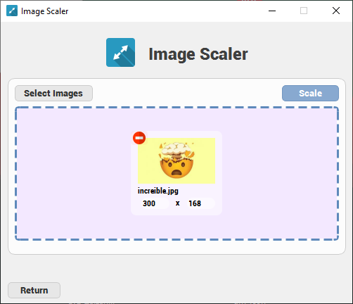

Características
Video and Music Downloader ->
Herramienta versátil para la descarga de contenido multimedia. Permite obtener videos en diversas resoluciones, extraer el audio de los videos y descargar miniaturas desde múltiples plataformas.
 Youtube
Youtube Instagram
Instagram- Tiktok


<- PDF Merger
Fusiona múltiples archivos PDF en un solo documento de forma rápida y eficiente.
- Sin límite de archivos
- Sin límite de páginas
- Sin restricción de tamaño
- Procesamiento ultra rápido
Image Converter ->
Transforma imágenes entre múltiples formatos de manera rápida y sencilla.
- Sin límite de cantidad de imágenes
- Sin restricción de tamaño
- Compatible con una amplia variedad de formatos
- Procesamiento rápido y eficiente


<- Video Converter
Convierte archivos de video entre múltiples formatos de manera sencilla y eficiente.
- Sin límite de cantidad de videos
- Sin restricción de tamaño
- Compatible con una amplia variedad de formatos de video
Audio Converter ->
Adapta tus archivos de audio al formato que necesites, sin complicaciones.
- Procesamiento ágil y fluido
- Sin límites en la cantidad ni en el tamaño de los archivos
- Soporte para una extensa gama de formatos de audio


<- Image Scaler
Redimensiona imágenes de forma sencilla, incluso en grandes volúmenes.
- Procesamiento rápido y eficiente
- Redimensiona múltiples imágenes simultáneamente
- Sin límite en la cantidad de archivos
 Descargar para Windows
Descargar para Windows
 devscemer@gmail.com
devscemer@gmail.com